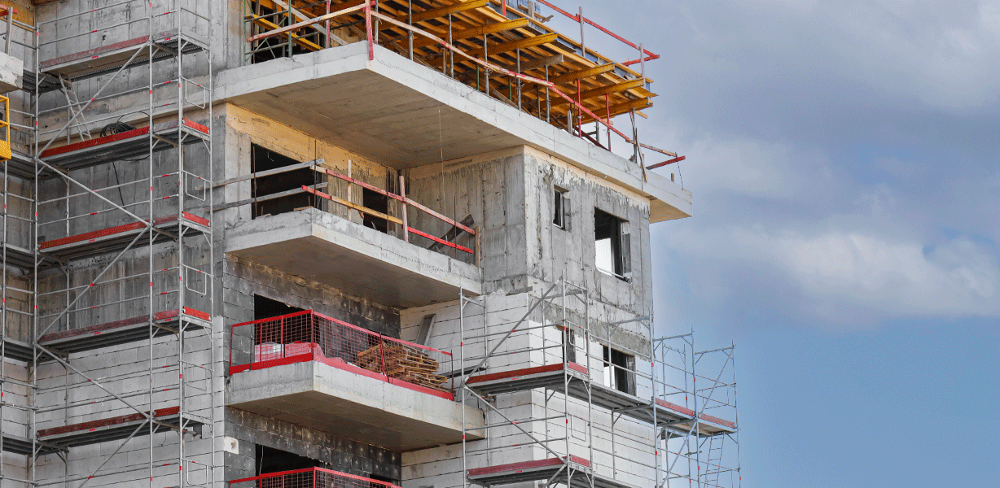

Emitimos ART e laudos técnicos para obras ou reformas.
Preços a partir de R$139,90
Falar com EngenheiroEngenheiro Civil com CREA ativo
18 anos de experiência em obras e reformas
Atendimento rápido para condomínios
Faça sua ART com quem entende.
Evite ter sua obra paralisada por falta de documentação.
Nós cuidamos de toda a emissão da ART para você, garantindo que sua reforma esteja conforme
a Lei nº 6.496/1977, que exige responsável técnico para obras e
serviços de engenharia.
Solicite sua ART agora e evite atrasos, problemas com o
condomínio ou até multas na sua
obra.

Descubra a causa do problema antes que ele aumente.
Realizamos inspeção técnica no local para identificar a origem de trincas,
infiltrações e outros problemas construtivos.
Após a análise, emitimos um laudo técnico com ART, documentando o diagnóstico
e orientando a solução correta para o seu imóvel ou condomínio.
O processo de usucapião exige documentação técnica elaborada por profissional
habilitado.
Elaboramos toda a documentação técnica necessária para regularização do imóvel,
garantindo que o processo tenha as informações exigidas para análise jurídica e registro em
cartório.
Realizamos o levantamento técnico do terreno, elaboração da planta e do
memorial descritivo, documentos fundamentais para dar andamento ao processo de
usucapião.
Regularize sua obra, reforma ou problema no imóvel com acompanhamento de engenheiro civil experiente.
FALE COM ENGENHEIRO AGORAA Cintra Engenharia é conduzida pelo engenheiro civil Gabriel Cintra, com atuação na construção civil desde 2006.
Atuamos com foco em condomínios residenciais e proprietários, oferecendo emissão de ART para obras e reformas, elaboração de laudos técnicos para diagnóstico de problemas construtivos e desenvolvimento de planta e memorial descritivo para processos de usucapião.
Nosso trabalho é baseado em responsabilidade técnica e clareza nas orientações para síndicos, administradoras e proprietários.
Tire dúvidas sobre emissão de ART, laudos técnicos ou documentação para usucapião.

Engenharia civil especializada em emissão de ART, laudos técnicos e documentação técnica para regularização de imóveis.
Atuação na construção civil desde 2006.
Atendimento rápido pelo WhatsApp.
Falar com Engenheiro no WhatsAppResposta rápida • Atendimento técnico profissional